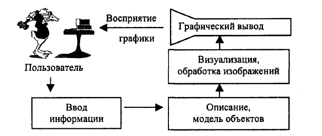

Задача компьютерной графики – визуализация, то есть создание изображения. Визуализация выполняется исходя из описания (модели) того, что нужно отображать. Существует много методов и алгоритмов визуализации, которые различаются между собой в зависимости от того, что и как отображать. Например, отображение того, что может быть только в воображении человека – график функций, диаграмма, схема, карта. Или наоборот, имитация трехмерной реальности – изображения сцен в компьютерных развлечениях, художественных фильмах, тренажерах, в системах архитектурного проектирования. Важными и связанными между собой факторами здесь являются: скорость изменения кадров, насыщенность сцены объектами, качество изображения, учет особенностей графического устройства.
